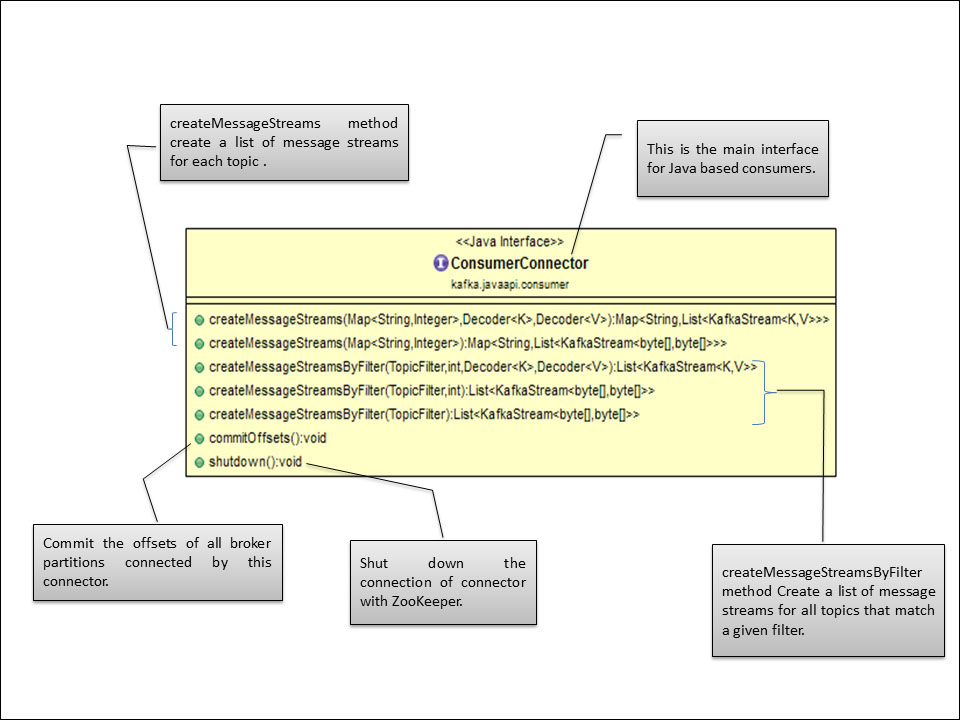

Consumers are the applications that consume the messages published by Kafka producers and process the data extracted from them. Like producers, consumers can also be different in nature, such as applications doing real-time or near-real-time analysis, applications with NoSQL or data warehousing solutions, backend services, consumers for Hadoop, or other subscriber-based solutions. These consumers can also be implemented in different languages such as Java, C, and Python.
In this chapter, we will focus on the following topics:
- Kafka API for message consumers
- Simple Java-based Kafka consumers
- Java-based Kafka consumers consuming partitioned messages
At the end of the chapter, we will explore some of the important properties required for a Kafka consumer. So, let's start.
In the next few sections, we will discuss the API provided by Kafka for writing Java-based custom consumers.
Kafka provides two types of API for Java consumers:
- The high-level consumer API
- The simple consumer API
The high-level consumer API is used when only data is needed and the handling of message offsets is not required. Hence, most of the low-level details are abstracted during message consumption. The high-level consumer stores the last offset read from a specific partition in ZooKeeper. This offset is stored based on the consumer group name provided to Kafka at the beginning of the process.
The consumer group name is unique and global across the Kafka cluster and any new consumers with an in-use consumer group name may cause ambiguous behavior in the system. When a new process is started with the existing consumer group name, Kafka triggers rebalance between the new and existing process threads for the consumer group. Post rebalance, some of the messages that are intended for a new process may go to an old process, causing unexpected results. To avoid this ambiguous behavior, any existing consumers should be shut down before starting new consumers for an existing consumer group name.
The following are the classes that are imported to write Java-based basic consumers using the high-level consumer API for a Kafka cluster:
- KafkaStream: Objects of the
kafka.consumer.KafkaStreamclass are returned by theConsumerConnectorimplementation. This list of theKafkaStreamobjects is returned for each topic, which can further create an iterator shown as follows over messages in the stream:class KafkaStream[K,V]
Here, the parameters
KandVspecify the type for the partition key and message value, respectively. - ConsumerConfig: The
kafka.consumer.ConsumerConfigclass encapsulates the property values required for establishing the connection with ZooKeeper, such as ZooKeeper URL, group ID, ZooKeeper session timeout, and ZooKeeper sink time. - ConsumerConnector: Kafka provides the
ConsumerConnectorinterface (interfaceConsumerConnector) which is further implemented by ZookeeperConsumerConnector classkafka.javaapi.consumer.ZookeeperConsumerConnector). This class is responsible for all the interaction of a consumer with ZooKeeper.The following is the class diagram for the
ConsumerConnectorclass:
Features such as setting the initial offset when restarting the consumer are not provided by the high-level consumer API. The simple consumer API provides low-level control to Kafka consumers for partition consumptions, for example, multiple reads for the same message or managing transactions, and so on.
Compared to high-level consumer API, developer needs to put in extra efforts to gain this low-level control within consumers, that is, consumers need to keep track of offsets and also need to figure out the lead broker for the topic and partition, and so on.
The main class used within the simple consumer API is SimpleConsumer
(kafka.javaapi.consumer.SimpleConsumer). The following is the class diagram for the SimpleConsumer class:

A simple consumer class provides a connection to the lead broker for fetching the messages from the topic and methods to get the topic metadata and the list of offsets.
A few more important classes for building different request objects are FetchRequest (kafka.api.FetchRequest), OffsetRequest (kafka.javaapi.OffsetRequest), OffsetFetchRequest (kafka.javaapi.OffsetFetchRequest), OffsetCommitRequest (kafka.javaapi.OffsetCommitRequest), and TopicMetadataRequest (kafka.javaapi.TopicMetadataRequest).
Note
The following examples in this chapter are based on the high-level consumer API. For examples based on the simple consumer API, refer to https://cwiki.apache.org/confluence/display/KAFKA/0.8.0+SimpleConsumer+Example.